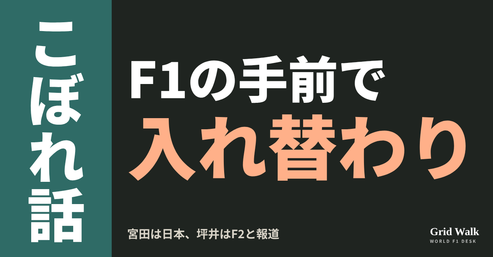
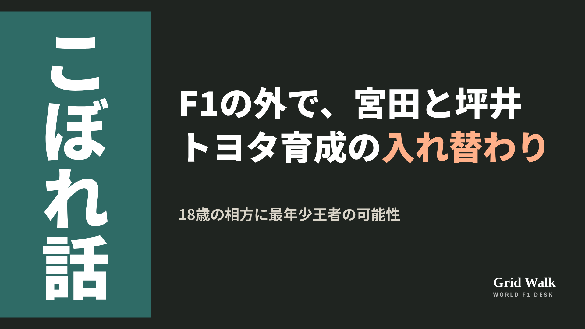
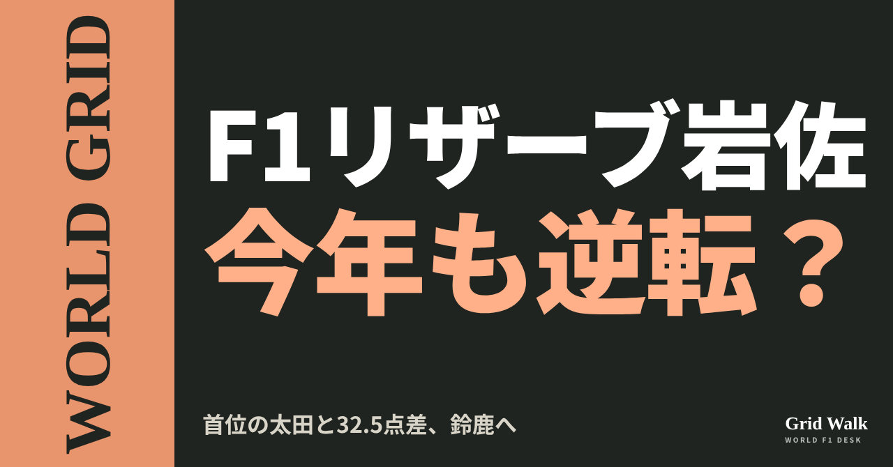
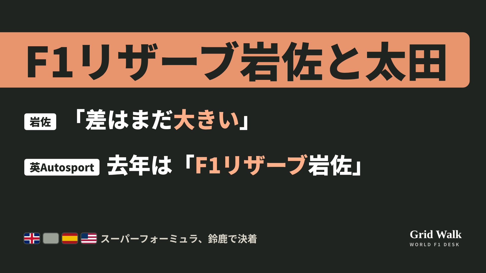

<meta charset="utf-8"><title>日本の若手コラム note貼り付け</title>
<style>
/* one column of numbered paste steps; text steps vs image steps differ by marker */
:root{--bg:#F5F4F0;--card:#FFFFFF;--ink:#1D2321;--mute:#5F665F;--line:#DCDAD2;--btn:#1F5FBF;--btnok:#2E8B4F;--img:#E9F3EC;--imgink:#22663B;--sans:'IBM Plex Sans JP','Hiragino Sans','Noto Sans JP',sans-serif}
@media (prefers-color-scheme:dark){:root:not([data-theme="light"]){--bg:#171A19;--card:#202423;--ink:#ECEDE8;--mute:#A3AAA2;--line:#343937;--btn:#4D8BE6;--btnok:#3FA866;--img:#1E2C23;--imgink:#8FD3A6;color-scheme:dark}}
:root[data-theme="dark"]{--bg:#171A19;--card:#202423;--ink:#ECEDE8;--mute:#A3AAA2;--line:#343937;--btn:#4D8BE6;--btnok:#3FA866;--img:#1E2C23;--imgink:#8FD3A6;color-scheme:dark}
body{background:var(--bg);color:var(--ink);font-family:var(--sans);font-size:15px;line-height:1.75;padding:20px 16px 60px}
main{max-width:680px;margin:0 auto;display:grid;gap:28px}
header h1{font-size:22px;margin:0 0 6px;text-wrap:balance}
header p{margin:0;color:var(--mute);font-size:14px}
nav{display:flex;gap:8px;flex-wrap:wrap;margin-top:12px}
nav a{border:1px solid var(--line);border-radius:999px;padding:4px 14px;color:var(--ink);text-decoration:none;font-size:14px;background:var(--card)}
.part h2{font-size:18px;line-height:1.5;margin:0 0 12px;text-wrap:balance;display:flex;gap:10px;align-items:baseline;flex-wrap:wrap}
.tag{font-size:13px;background:var(--ink);color:var(--bg);border-radius:6px;padding:1px 9px}
.steps{list-style:none;margin:0;padding:0;display:grid;gap:12px}
.st{background:var(--card);border:1px solid var(--line);border-radius:12px;padding:12px;min-width:0}
.hd{display:flex;align-items:center;gap:8px;margin-bottom:8px}
.no{width:26px;height:26px;border-radius:50%;background:var(--btn);color:#fff;display:inline-flex;align-items:center;justify-content:center;font-size:13px;font-weight:700;flex:0 0 26px}
.im .no{background:var(--btnok)}
.hd em{font-style:normal;font-size:12px;background:var(--img);color:var(--imgink);border-radius:6px;padding:0 8px}
.bx{font-size:13.5px;line-height:1.7;border:1px solid var(--line);border-radius:8px;padding:8px 10px;max-height:110px;overflow:auto;overflow-wrap:anywhere}
.bx.tall{max-height:150px}.bx p{margin:0 0 6px}.bx h2{font-size:14px;margin:8px 0 4px}.bx a{color:var(--btn)}
.st img{display:block;width:100%;max-width:100%;border:1px solid var(--line);border-radius:8px}
.sub{font-size:12.5px;color:var(--mute);margin:6px 0 0}
.cp{width:100%;margin-top:8px;padding:12px;border:0;border-radius:10px;background:var(--btn);color:#fff;font:600 15px var(--sans);cursor:pointer}
.cp.ok{background:var(--btnok)}.cp.dl{background:var(--btnok)}.cp:focus-visible{outline:3px solid var(--ink);outline-offset:2px}
.xh{font-size:15px;margin:20px 0 10px}
.fb{font-size:13px;line-height:1.7;margin:8px 0 0;padding:8px 10px;border-radius:8px;background:var(--img);color:var(--imgink)}
.opts{display:grid;grid-template-columns:repeat(auto-fill,minmax(240px,1fr));gap:10px}
.opt{min-width:0}.opt img{display:block;width:100%;border:1px solid var(--line);border-radius:8px}
.ol{display:flex;align-items:center;gap:8px;margin-top:6px}.ol b{font-size:13px;flex:0 0 auto}.ol .on{font-size:12.5px;color:var(--mute);flex:1;min-width:0}.ol .cp{width:auto;flex:0 0 auto;padding:9px 14px}.ol .cp{margin:0;padding:9px}
.toast{font-size:13px;color:var(--mute);margin-top:6px}
</style>
<main><header><h1>日本の若手コラム note貼り付け</h1><p>いま公開済みは2本です。青い番号は文章、緑は画像です。</p><nav><a href="#p1">1</a><a href="#p2">2</a></nav></header><section class="part" id="p1"><h2><span class="tag">OFF GRID</span>宮田がもてぎへ、坪井はF2へと報道　トヨタ育成の入れ替わり</h2><p class="sub">サイトに公開：01:48</p><ol class="steps">
<li class="st im"><div class="hd"><span class="no">1</span><b>見出し画像</b><em>画像</em></div><button class="cp dl" data-img="img/miyata-tsuboi-toyota-20261027.png" data-name="miyata-tsuboi-toyota-20261027_見出し画像.png">ダウンロード</button></li>
<li class="st"><div class="hd"><span class="no">2</span><b>タイトル</b></div><div class="bx" id="p1t">宮田がもてぎへ、坪井はF2へと報道　トヨタ育成の入れ替わり</div><button class="cp" data-plain="p1t">タイトルをコピー</button></li>
<li class="st"><div class="hd"><span class="no">3</span><b>本文</b></div><div class="bx tall" id="p1r"><p>F2を戦う宮田莉朋が、11月7〜8日のSUPER GT最終戦もてぎに出ます。3年前にGT500の王座を決めた場所です。その年に王座を分け合った坪井翔は、逆に2027年にF2へ移る見込みと報じられました。そして宮田の今回の相方は18歳。勝てば「史上最年少」の記録がかかっています。</p><p>宮田のF2の3年間をたどる読み解きと、元の記事へのリンクはサイトで → <a href="https://f1gridwalk.github.io/lens/miyata-tsuboi-toyota-20261027/?utm_source=note&amp;utm_campaign=miyata-tsuboi-toyota-20261027">https://f1gridwalk.github.io/lens/miyata-tsuboi-toyota-20261027/?utm_source=note&amp;utm_campaign=miyata-tsuboi-toyota-20261027</a></p><h2>3年ぶりのもてぎ、乗るのはフェラーリ</h2><p>乗るのはGT300クラスのCARGUY MKS RACINGの7号車、フェラーリ296 GT3 EVO。ザック・オサリバンが、フォーミュラEに向けたテストに専念するため、シーズンを早めに切り上げるからです（Sportscar365／アメリカ）。SUPER GTの公式サイトが10月26日に出したエントリーリストにも、7号車に宮田と梅垣清の名前が並んでいます（autosport web／日本）。</p><p>motorsport.com 日本版によると、木村武史代表はSNSにこう書きました。</p><blockquote><p>「彼しか託せない！」「逆転を託せるドライバーは宮田選手以外には考えられませんでした」（木村武史代表、motorsport.com 日本版／日本）</p></blockquote><p>アメリカのSportscar365とRACERによると、宮田がSUPER GTを走るのは、2023年にもてぎでGT500の王座を決めて以来。そのときトムスで一緒に王座を取ったのが坪井でした。</p><h2>坪井はF2へ、宮田は日本へ？</h2><p>Motorsport.com（英語版）は9月30日、トヨタ系の坪井（31歳）が2027年にスーパーフォーミュラからF2へ移る見込みだと報じました。坪井は同記事の時点で、ハースの旧型車テスト（TPC）に今年3回、通算5回出ていました。トヨタの中嶋一貴副会長は、具体的な計画は明かさず、こう話しました。</p><blockquote><p>「本人次第です。国際的な舞台で挑戦したいなら、ハースも含めてチャンスはあると思います。でも、まず大事なのは本人が何をしたいかです」（中嶋一貴副会長、Motorsport.com 英語版）</p></blockquote><p>同じ記事は、坪井がF2に移る見込みのため、宮田がもう1年F2に残る見込みは薄いと書き、トムスに戻ってスーパーフォーミュラとSUPER GTを走るのは当然考えられる可能性だとしました。Sportscar365も、坪井と「逆向き」に宮田が日本に戻る可能性は高いと見られている、と報じています。アメリカのRACERも、2027年はSUPER GTとスーパーフォーミュラにフル参戦で戻る見込みだといううわさを伝えています。</p><p>宮田のF2の3年目は、9月のマドリードのスプリントで初優勝。ランキングは9月のバクー大会を終えて12位（70点）です（RacingNews365／イギリス）。3年間の歩みはサイトの読み解きで（https://f1gridwalk.github.io/topics/miyata-for-this-day/ ）。</p><h2>18歳の相方に「最年少」の可能性</h2><p>宮田と組む梅垣清は18歳。トヨタ育成（TGR-DC）の一人で、2025年のフォーミュラ・リージョナル・ジャパニーズ・チャンピオンシップの王者。今季SUPER GTにデビューしたルーキーです（autosport web）。</p><p>Dailysportscarによると、梅垣はGT300で首位の2人と20点差。もてぎの2レースのどちらかで勝てばSUPER GT史上最年少の勝者に、20点差をひっくり返せば、両クラスを通じて史上最年少の王者になります。20点差には、ほかに2組がいます（RACER）。</p><p>坪井も、山下健太と組む36号車でGT500のランキング首位としてもてぎに臨みます。2位とは3点差です（autosport web）。</p><p>編集部としては、3年前に王座を分け合った2人が、一方は自分の、一方は18歳の相方の王座をかけて同じもてぎを走ることが、いちばんの見どころと見ています。</p><p><strong>2027年、宮田と坪井はそれぞれどこを走っていると思いますか？</strong></p><p>━━━━━━━━━━</p><p><strong>F1 Grid Walk では、世界のF1ニュースを毎日日本語でまとめています。</strong></p><p>海外の記事の要約を、毎日載せています。</p><p><a href="https://f1gridwalk.github.io/">https://f1gridwalk.github.io/</a></p><p>ほかの海外記事も読みたい方は、F1 Grid Walkへ。</p><p><a href="https://f1gridwalk.github.io/lens/miyata-tsuboi-toyota-20261027/">https://f1gridwalk.github.io/lens/miyata-tsuboi-toyota-20261027/</a></p><p>━━━━━━━━━━</p><p><a href="https://www.dailysportscar.com/2026/10/23/ritomo-miyata-makes-surprise-super-gt-return-with-carguy-mks-racing.html">出典：Dailysportscar（イギリス）</a></p><p><a href="https://sportscar365.com/super-gt/gr-gt3-confirmed-for-motegi-miyata-replaces-osullivan">出典：Sportscar365（アメリカ）</a></p><p><a href="https://racer.com/2026/10/26/one-champion-in-one-out-for-super-gt-s-season-finale-at-motegi">出典：RACER（アメリカ）</a></p><p><a href="https://sports.yahoo.com/articles/toyota-backed-sho-tsuboi-switch-134514702.html">出典：Motorsport.com（英語版、Yahoo Sportsの転載）（イギリス）</a></p><p><a href="https://jp.motorsport.com/supergt/news/miyata-joins-carguy-for-motegi-2026/10867662/">出典：motorsport.com 日本版（日本）</a></p><p><a href="https://carview.yahoo.co.jp/news/detail/b2f57772d5e79ce66c3a55c72e65bb9cce7c0d0b/">出典：autosport web（carviewの転載）（日本）</a></p><p><a href="https://www.as-web.jp/supergt/1366873">出典：autosport web（日本）</a></p><p><a href="https://www.as-web.jp/supergt/1312859">出典：autosport web（日本）</a></p><p><a href="https://racingnews365.com/2026-f2-championship-standings-after-baku-feature-race-2">出典：RacingNews365（イギリス）</a></p></div><button class="cp" data-rich="p1r">本文をコピー</button></li>
<li class="st"><div class="hd"><span class="no">4</span><b>ハッシュタグ</b></div><div class="bx" id="p1h">#F1 #F1jp #宮田莉朋 #坪井翔 #梅垣清 #SUPERGT #スーパーGT #FIAF2 #F1こぼれ話 #OFFGRID</div><button class="cp" data-plain="p1h">タグをコピー</button></li>
</ol><h3 class="xh">X</h3><ol class="steps">
<li class="st im"><div class="hd"><b>X用の画像</b><em>画像</em></div><button class="cp dl" data-img="img/x_miyata-tsuboi-toyota-20261027.png" data-name="x_miyata-tsuboi-toyota-20261027.png">ダウンロード</button></li>
<li class="st"><div class="hd"><b>① noteをシェアするときの文</b></div><div class="bx" id="p1x0">F2の宮田莉朋が、3年ぶりにSUPER GTのもてぎ最終戦へ。一方、2023年に王座を分け合った坪井翔は、F2へ移る見込みと報じられました。相方は18歳で「最年少」もかかる一戦。noteにまとめました #F1jp #宮田莉朋</div><button class="cp" data-plain="p1x0">コピー</button></li>
<li class="st"><div class="hd"><b>② ①への返信</b></div><div class="bx" id="p1x1">ほかの海外記事も読みたい方は、F1 Grid Walkへ。
https://f1gridwalk.github.io/lens/miyata-tsuboi-toyota-20261027/?utm_source=x&amp;utm_campaign=miyata-tsuboi-toyota-20261027</div><button class="cp" data-plain="p1x1">コピー</button></li>
<li class="st"><div class="hd"><b>③ ②への返信</b></div><div class="bx" id="p1x2">毎日の海外F1ニュースは、日本語でこちらにまとめています。
https://f1gridwalk.github.io/</div><button class="cp" data-plain="p1x2">コピー</button></li>
</ol></section><section class="part" id="p2"><h2><span class="tag">WORLD GRID</span>去年の見出しは「F1リザーブ」　岩佐と太田、海外は今年どう書いた</h2><p class="sub">サイトに公開：01:50</p><ol class="steps">
<li class="st im"><div class="hd"><span class="no">1</span><b>見出し画像</b><em>画像</em></div><button class="cp dl" data-img="img/iwasa-ohta-suzuka-20261027.png" data-name="iwasa-ohta-suzuka-20261027_見出し画像.png">ダウンロード</button></li>
<li class="st"><div class="hd"><span class="no">2</span><b>タイトル</b></div><div class="bx" id="p2t">去年の見出しは「F1リザーブ」　岩佐と太田、海外は今年どう書いた</div><button class="cp" data-plain="p2t">タイトルをコピー</button></li>
<li class="st"><div class="hd"><span class="no">3</span><b>本文</b></div><div class="bx tall" id="p2r"><p>去年の岩佐歩夢は、最終大会で逆転して、スーパーフォーミュラの王者になりました。今年は追う側で、首位は太田格之進。王座は11月21日と22日、鈴鹿の2レースで決まります。海外の書き方は、去年とはかなり違います。</p><p>英米スペインの見出しの違いと、元の記事へのリンクはサイトで → <a href="https://f1gridwalk.github.io/lens/iwasa-ohta-suzuka-20261027/?utm_source=note&amp;utm_campaign=iwasa-ohta-suzuka-20261027">https://f1gridwalk.github.io/lens/iwasa-ohta-suzuka-20261027/?utm_source=note&amp;utm_campaign=iwasa-ohta-suzuka-20261027</a></p><h2>富士の2日間</h2><p>10月10日の第9戦は、イゴール・オオムラ・フラガが優勝し、太田が2位、岩佐が4位でした（ホンダ公式）。レースの後、太田はこう話しています。</p><blockquote><p>「明日のレースに勝って、チャンピオンを決めたいです」（太田格之進、ホンダ公式／日本）</p></blockquote><p>翌11日の第10戦は、岩佐が今季初優勝。太田はフラガを抜き返そうとして、ターン15でフラガの横にぶつかり、その場でリタイアしました（イギリスのAutosport）。</p><h2>鈴鹿で取れるのは最大46点</h2><p>JAFが公開した2026年の統一規則では、150km以上のレースは優勝が20点、予選1位は3点で、2レースの大会では予選ごとに点が入ります。鈴鹿の2レースはどちらも180km（Motorsport.com）。1人が取れるのは、2回とも予選1位で優勝した場合の46点です。Autosportも「鈴鹿で残り46点」と書きました。</p><p>第10戦を終えた時点の順位は、1位が太田、2位が岩佐、3位がフラガで、3人ともホンダのエンジンです。点数は太田122点、岩佐89.5点で、差は32.5点です（ホンダ公式、Autosport）。岩佐は差の大きさを認めています。</p><blockquote><p>「選手権については、点差を縮めて望みをつなぎましたが、差はまだ大きいです」「ポイントのことを考えるより、最後のレースで勝つことだけに集中します」（岩佐歩夢、ホンダ公式／日本）</p></blockquote><p>去年はどうだったか。ホンダ公式によると、2025年の第10戦を終えた時点で、首位の坪井翔は116.5点、岩佐は104点の4位で、差は12.5点でした。岩佐は最終の第12戦をポール・トゥ・ウインで制し、坪井を4.5点上回って王者に（Autosport）。太田は3位でした（スペインのDiariomotor）。</p><h2>去年の見出しは「F1リザーブ」</h2><p>去年の王座決定を、Autosportは「鈴鹿：レッドブルのF1リザーブ岩佐、坪井を破って王座」という見出しで伝えました。今年の富士は「岩佐が優勝、太田はタイトルを決めるチャンスを逃す」。見出しの後半は太田の話で、F1の文字はありません。インドのSunday Guardianは、ピットレーンで4台が絡んだ事故と岩佐の優勝を見出しに並べました。</p><p>Autosportのジェイミー・クライン記者は、自分のニュースレター「Japan Racing Insider」で、太田を「次期王者」と呼び、岩佐が奇跡の逆転で太田から王座を取るのは、極めて遠い見通しだと書いています。</p><h2>F1の側と、インディカーの側</h2><p>F1公式サイトは2月、岩佐を「レーシングブルズの公式リザーブの一人」と紹介しました。イギリスのPlanetF1は10月9日、レーシングブルズの2027年の候補を「ローソン、リンドブラッド、ツォロフ」の3人と書き、岩佐の名前は出てきません。クライン記者は2025年10月、自分のニュースレターで、岩佐はスーパーフォーミュラと重なるF1の4大会を欠席する了承をレッドブルから得ているとみられる、と書いていました。その一つが、鈴鹿と同じ週末のラスベガスGPです。</p><p>太田は、海外ではインディカーを目指すドライバーとして書かれます。Autosportは8月、太田がアレックス・パロウとフェリックス・ローゼンクヴィストに続くことを目指していると書き、スペインのDiariomotorの見出しは「インディカーに狙いを定める太田格之進」。アメリカのRACERは6月、2028年に見込まれるメイヤー・シャンク・レーシングの3台目（ホンダのメーカー枠）が最も有力だが、まだ何も確定していないと報じました。RACERの記事で、太田はこう話しています。</p><blockquote><p>「結果を出さないといけないし、ホンダが必要とする存在でいないといけない」（太田格之進、RACER／アメリカ）</p></blockquote><p>編集部としては、去年はF1のリザーブとしての岩佐を見出しの前に出したAutosportが、今年は太田の側にも重心を移したと見ています。岩佐が2回とも予選1位で勝っても、届くかは太田の結果しだい。F1のリザーブと、インディカーを目指すドライバーが、鈴鹿で最後に並びます。</p><p><strong>岩佐は今年も、鈴鹿で逆転できると思いますか？</strong></p><p>━━━━━━━━━━</p><p><strong>F1 Grid Walk では、世界のF1ニュースを毎日日本語でまとめています。</strong></p><p>海外の記事の要約を、毎日載せています。</p><p><a href="https://f1gridwalk.github.io/">https://f1gridwalk.github.io/</a></p><p>ほかの海外記事も読みたい方は、F1 Grid Walkへ。</p><p><a href="https://f1gridwalk.github.io/lens/iwasa-ohta-suzuka-20261027/">https://f1gridwalk.github.io/lens/iwasa-ohta-suzuka-20261027/</a></p><p>━━━━━━━━━━</p><p><a href="https://honda.racing/super-formula/post/sf-2026-rd10-race">出典：Honda Racing 公式（日本）</a></p><p><a href="https://honda.racing/super-formula/post/sf-2026-rd9-race">出典：Honda Racing 公式（日本）</a></p><p><a href="https://www.autosport.com/super-formula/news/super-formula-fuji-ayumu-iwasa-wins-as-kakunoshin-ohta-misses-chance-to-seal-title/10864180/">出典：Autosport（イギリス）</a></p><p><a href="https://sundayguardianlive.com/sports/watch-four-car-pit-lane-crash-at-super-formula-fuji-speedway-as-ayumu-iwasa-wins-chaotic-race-303463/">出典：The Sunday Guardian（インド）</a></p><p><a href="https://japanracinginsider.substack.com/p/winners-and-losers-from-super-formulas-784">出典：Japan Racing Insider（ジェイミー・クライン）（日本）</a></p><p><a href="https://japanracinginsider.substack.com/p/has-ayumu-iwasa-been-unfairly-overlooked">出典：Japan Racing Insider（ジェイミー・クライン）（日本）</a></p><p><a href="https://motorsports.jaf.or.jp/-/media/1/3375/3379/3402/3404/4350/20251204_05.pdf">出典：JAF（日本自動車連盟）（日本）</a></p><p><a href="https://www.motorsport.com/super-formula/news/super-formula-adjusts-race-weekend-format-for-2026/10800051/">出典：Motorsport.com（イギリス）</a></p><p><a href="https://honda.racing/super-formula/post/sf-2025-rd12-race">出典：Honda Racing 公式（日本）</a></p><p><a href="https://www.autosport.com/super-formula/news/red-bull-f1-reserve-ayumu-iwasa-wins-super-formula-title/10779155/">出典：Autosport（イギリス）</a></p><p><a href="https://www.diariomotor.com/competicion/noticia/ayumu-iwasa-da-la-sorpresa-en-la-ronda-triple-de-suzuka-y-se-proclama-campeon-de-la-super-formula/">出典：Diariomotor（スペイン）</a></p><p><a href="https://www.formula1.com/en/latest/article/who-are-the-reserve-drivers-for-each-f1-team-in-2026.Ce8YvwuVJGLkVNgERX21U">出典：F1公式サイト（イギリス）</a></p><p><a href="https://www.planetf1.com/news/liam-lawson-racing-bulls-f1-2027">出典：PlanetF1（イギリス）</a></p><p><a href="https://www.autosport.com/super-formula/news/the-rising-japanese-star-with-his-sights-set-on-indycar/10844341/">出典：Autosport（イギリス）</a></p><p><a href="https://www.diariomotor.com/competicion/noticia/kakunoshin-ohta-opciones-indycar-2028/">出典：Diariomotor（スペイン）</a></p><p><a href="https://racer.com/2026/06/27/ohta-hoping-msr-imsa-stint-leads-to-more-opportunities-stateside">出典：RACER（アメリカ）</a></p></div><button class="cp" data-rich="p2r">本文をコピー</button></li>
<li class="st"><div class="hd"><span class="no">4</span><b>ハッシュタグ</b></div><div class="bx" id="p2h">#F1 #F1jp #岩佐歩夢 #太田格之進 #スーパーフォーミュラ #レーシングブルズ #ホンダ #インディカー #WORLDGRID</div><button class="cp" data-plain="p2h">タグをコピー</button></li>
</ol><h3 class="xh">X</h3><ol class="steps">
<li class="st im"><div class="hd"><b>X用の画像</b><em>画像</em></div><button class="cp dl" data-img="img/x_iwasa-ohta-suzuka-20261027.png" data-name="x_iwasa-ohta-suzuka-20261027.png">ダウンロード</button></li>
<li class="st"><div class="hd"><b>① noteをシェアするときの文</b></div><div class="bx" id="p2x0">スーパーフォーミュラの王座は鈴鹿で決着。首位の太田格之進と32.5点差の岩佐歩夢は、今年も逆転できるか。去年「F1リザーブ岩佐」と打った海外の見出しは、今年どう変わったか。noteにまとめました #F1jp #岩佐歩夢 #太田格之進</div><button class="cp" data-plain="p2x0">コピー</button></li>
<li class="st"><div class="hd"><b>② ①への返信</b></div><div class="bx" id="p2x1">ほかの海外記事も読みたい方は、F1 Grid Walkへ。
https://f1gridwalk.github.io/lens/iwasa-ohta-suzuka-20261027/?utm_source=x&amp;utm_campaign=iwasa-ohta-suzuka-20261027</div><button class="cp" data-plain="p2x1">コピー</button></li>
<li class="st"><div class="hd"><b>③ ②への返信</b></div><div class="bx" id="p2x2">毎日の海外F1ニュースは、日本語でこちらにまとめています。
https://f1gridwalk.github.io/</div><button class="cp" data-plain="p2x2">コピー</button></li>
</ol></section></main><script>
function done(b,msg){const t=b.dataset.t||b.textContent;b.dataset.t=t;b.classList.add('ok');b.textContent=msg||'コピーしました';setTimeout(()=>{b.classList.remove('ok');b.textContent=t},2000)}
function selectEl(el){const r=document.createRange();r.selectNodeContents(el);const s=getSelection();s.removeAllRanges();s.addRange(r)}
async function rich(el,b){
  try{await navigator.clipboard.write([new ClipboardItem({'text/html':new Blob([el.innerHTML],{type:'text/html'}),'text/plain':new Blob([el.innerText],{type:'text/plain'})})]);done(b);return}catch(e){}
  selectEl(el);let ok=false;try{ok=document.execCommand('copy')}catch(e){}
  if(ok){getSelection().removeAllRanges();done(b)}else{done(b,'選択しました。コピーしてください')}}
async function plain(el,b){
  try{await navigator.clipboard.writeText(el.innerText);done(b);return}catch(e){}
  selectEl(el);let ok=false;try{ok=document.execCommand('copy')}catch(e){}
  if(ok){getSelection().removeAllRanges();done(b)}else{done(b,'選択しました。コピーしてください')}}
let dlns=null;(async()=>{try{dlns=await window.claude?.use?.("downloads")}catch(e){dlns=null}})();
async function img(src,b){
  b.dataset.t=b.dataset.t||b.textContent;
  if(!dlns){try{dlns=await window.claude?.use?.("downloads")}catch(e){}}
  if(!dlns){b.textContent='ダウンロードできませんでした';setTimeout(()=>{b.textContent=b.dataset.t},3500);return}
  try{const blob=await fetch(src).then(r=>r.blob());b.textContent='保存の確認を開いています…';
    await dlns.save({filename:b.dataset.name,data:blob});done(b,'ダウンロードしました')}
  catch(e){const c=e&&e.code;b.textContent=c==='declined'?'キャンセルしました':c==='rate_limited'?'少し待ってからもう一度押してください':'ダウンロードできませんでした';setTimeout(()=>{b.textContent=b.dataset.t},3500)}}
document.querySelectorAll('.cp').forEach(b=>b.addEventListener('click',()=>{
  if(b.dataset.rich)rich(document.getElementById(b.dataset.rich),b);
  else if(b.dataset.plain)plain(document.getElementById(b.dataset.plain),b);
  else img(b.dataset.img,b)}));
</script>